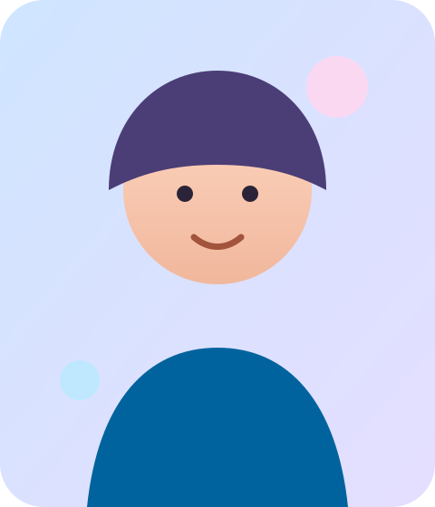

Personal website
A single page or a small site that tells people about you and your work.
Interface designer
I help people tell their story online: I build pages, choose colors and check that everything works on a phone.

A single page or a small site that tells people about you and your work.
A tidy gallery of projects with the goal and the result for each one.
I look at your site through a visitor's eyes and suggest improvements.